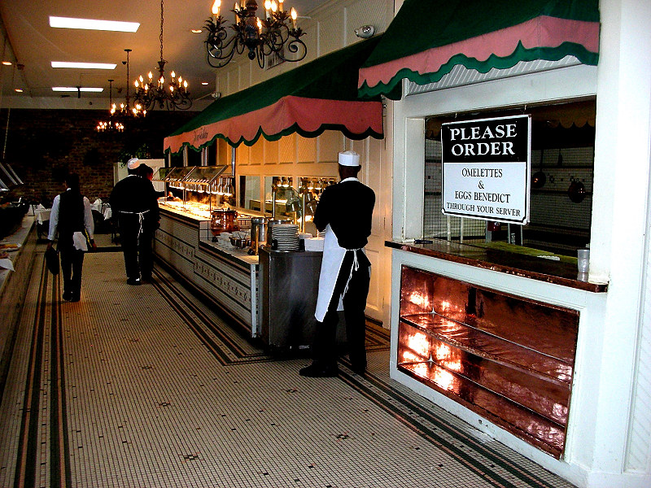

Johnnie and Oberta Baker's Photo Album Gallery Previous Next
|

The world-famous daily Jazz Brunch Buffet is a sumptuous display of hot and cold dises. The buffet's selections change according to season and time of day. In the morning, a typical selection of hot dishes includes made-to-order omelets, Eggs Benedict, sausage and bacon, grits and grillades, and shrimp or veggie pasta with a creamy Alfredo sauce. The afternoon's sampling includes Creole jambalaya, turtle soup, Duck a l'Orange, and Shrimp Etouffee. |